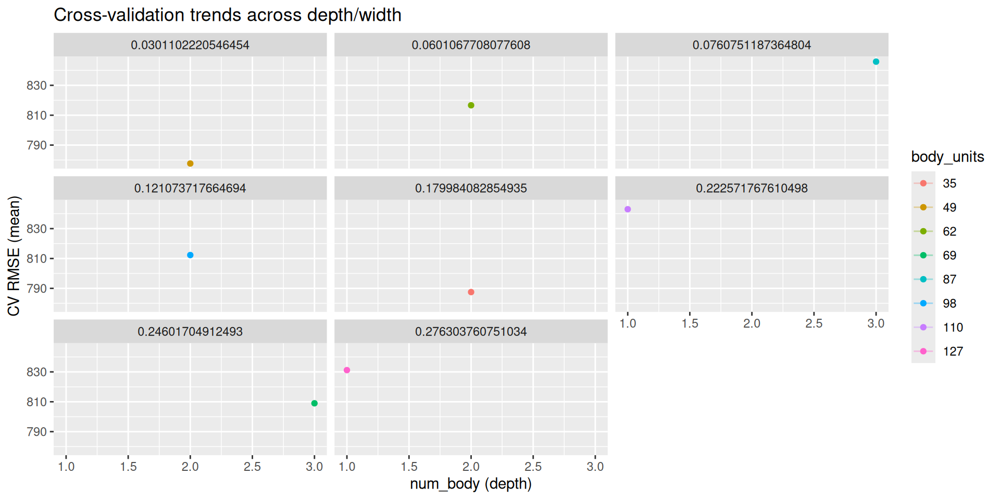
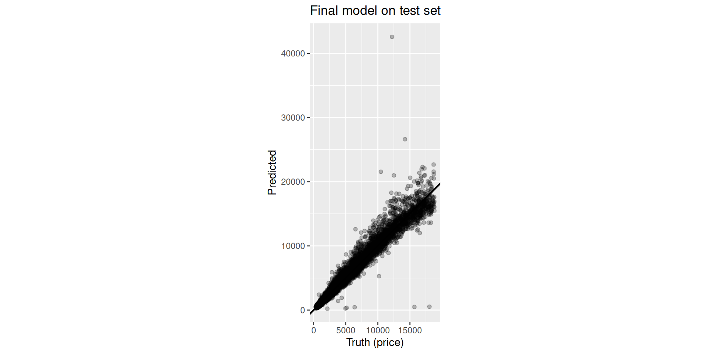
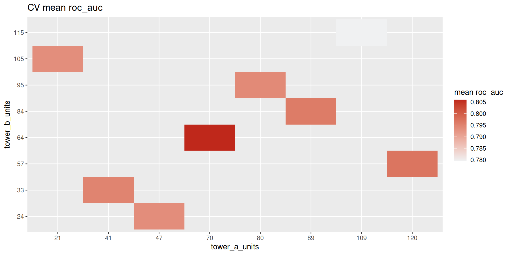
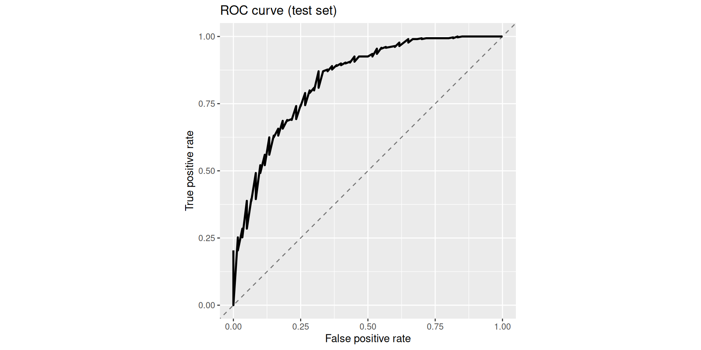

flowchart LR
classDef step fill:#f5f7fa,stroke:#5c6b7a,color:#1b3a57,stroke-width:2px;
classDef tune fill:#BF281B,stroke:#BF281B,color:#ffffff,stroke-width:2px;
A["Blocks<br/>(layer blocks)"] --> B["Spec function<br/>create_keras_*_spec()"]
B --> C["Workflow<br/>recipe() + workflow()"]
C --> D["Tuning<br/>tune_grid()"]
A -. "args → tunables<br/>num_{block} repeats" .-> B
class A,B,C step;
class D tune;
kerasnip: A Bridge Between ‘keras’ and ‘tidymodels’
Madrid R Group | February 2026
kerasnip v0.1.0.900
Docs: davidrsch.github.io/kerasnip · Repo: github.com/davidrsch/kerasnip
Today
- Why tuning Keras inside tidymodels is hard
- What
kerasnipgenerates (and why it matters) - Sequential workflow: structural tuning with
num_{block} - Functional workflow: branch/merge graphs with
inp_spec() - Debugging + practical tips
The Landscape
🧱 Keras (via keras3)
- Deep Learning
- Tensor-centric & Imperative
- Backend agnostic (TF, JAX, Torch)
- Arbitrary graphs of layers
🧹 Tidymodels
- Machine Learning
- Dataframe-centric & Declarative
- Unified interface (
fit,predict) - Standardized tuning
The Gap: Using tune_grid() to optimize Neural Network topology (depth/width) is difficult because parsnip expects fixed arguments, while Keras models are arbitrary graphs.
The Pain Point (in one sentence)
Keras models are arbitrary graphs, but parsnip specs are fixed argument sets.
So you can tune learning rate easily, but tuning model structure (depth / width / branches) is awkward.
Ecosystem Context
| Package | Role | Limitation |
|---|---|---|
parsnip::mlp() |
Tidymodels MLP | Mostly fixed topology; little architecture/feature engineering |
reticulate |
Python Bridge | Low-level, no ML workflow |
keras3 |
R Interface | No native tune() integration |
luz/brulee |
Torch + Tidymodels | Torch-only backend |
kerasnip |
Keras + Tidymodels | Bridges Keras flexibility with Tidymodels workflows |
The Solution: Dynamic Specs
kerasnip is a Model Builder, not a Model Zoo.
- Define Blocks: Functions returning Keras layers.
- Meta-program Spec:
create_keras_*_spec()generates a newparsnipmodel. - Tune Structure: Block arguments (and repetition count) can be tuned.
Mental Model
Key Functions You’ll See
create_keras_sequential_spec()create_keras_functional_spec()inp_spec()(functional wiring)compile_keras_grid()(debug/inspect generated graphs)extract_parameter_set_dials()(what can be tuned?)
Naming Conventions (auto-generated args)
- Arguments get prefixed by block name (e.g.
body_units) - Repeatable blocks expose
num_{block}(e.g.num_body) - Repetitions share the same hyperparameters (by design)
Example mapping:
dense_block(model, units = 128, dropout = 0.1) → body_units, body_dropout
Sequential vs Functional (rule of thumb)
- Sequential: one stream of features, simple stacks
- Functional: multi-input, branch/merge, skip connections, explicit graphs
Common Gotchas
- Ensure the recipe outputs numeric matrices (dummy + normalize)
- Start with a small grid, confirm structure via
compile_keras_grid() - Keep tuning spaces reasonable (depth × width can explode)
Workflow 1: Sequential API (Regression)
Goal: Predict diamond prices and tune depth + width.
Dataset: ggplot2::diamonds.
Sequential Blocks (minimal)
input_block <- function(model, input_shape) {
keras_model_sequential(input_shape = input_shape)
}
dense_block <- function(model, units = 128, dropout = 0.0) {
model |>
layer_dense(units = units, activation = "relu") |>
layer_dropout(rate = dropout)
}
output_block <- function(model) {
model |> layer_dense(units = 1)
}Generate the parsnip spec
Structural Tuning
We treat topology as a hyperparameter.
The arguments num_{block} are automatically generated by kerasnip for any repeatable block.
Diamonds + Tidymodels Workflow
library(tidymodels)
library(kerasnip)
data(diamonds, package = "ggplot2")
diamonds_split <- initial_split(diamonds, strata = price)
diamonds_train <- training(diamonds_split)
diamonds_rec <- recipe(price ~ ., data = diamonds_train) |>
step_dummy(all_nominal_predictors()) |>
step_zv(all_predictors()) |>
step_normalize(all_numeric_predictors())
wf <- workflow() |>
add_recipe(diamonds_rec) |>
add_model(spec)Tuning Grid (including depth)
params <- extract_parameter_set_dials(wf) |>
update(
num_body = dials::num_terms(c(1, 4)),
body_units = dials::hidden_units(c(32, 256)),
body_dropout = dials::dropout(c(0, 0.4))
)
grid <- grid_latin_hypercube(params, size = 20)
folds <- vfold_cv(diamonds_train, v = 5, strata = price)
res <- tune_grid(wf, resamples = folds, grid = grid)Results (Diamonds): CV — Table
| num_body | body_units | body_dropout | mean | std_err |
|---|---|---|---|---|
| 2 | 49 | 0.030 | 777.665 | 61.362 |
| 2 | 35 | 0.180 | 787.516 | 42.675 |
| 3 | 69 | 0.246 | 808.989 | 51.765 |
| 2 | 98 | 0.121 | 812.297 | 63.662 |
| 2 | 62 | 0.060 | 816.646 | 81.701 |
Results (Diamonds): CV — Plot

Results (Diamonds): Test — Table
| .metric | .estimate |
|---|---|
| rmse | 746.5090 |
| mae | 358.2152 |
| rsq | 0.9674 |
Results (Diamonds): Test — Plot

Debugging: “What model did we just create?”
# A tibble: 1 × 4
num_body body_units body_dropout error
<dbl> <dbl> <dbl> <chr>
1 3 128 0.2 <NA> # A tibble: 7 × 2
layer class
<chr> <chr>
1 dense_150 keras.src.layers.core.dense.Dense
2 dropout_100 keras.src.layers.regularization.dropout.Dropout
3 dense_151 keras.src.layers.core.dense.Dense
4 dropout_101 keras.src.layers.regularization.dropout.Dropout
5 dense_152 keras.src.layers.core.dense.Dense
6 dropout_102 keras.src.layers.regularization.dropout.Dropout
7 dense_153 keras.src.layers.core.dense.Dense Workflow 2: Functional API (Branch/Merge)
Goal: Employee Attrition (Classification).
Dataset: modeldata::attrition.
We’ll build a small branch/merge graph: - one input tensor - two parallel “towers” - concat + output
Functional Wiring with inp_spec()
inp_spec(func, inputs) explicitly maps upstream block outputs to function arguments.
That’s the key to: - multi-input models - skip connections - branch/merge architectures
Functional Blocks (minimal)
# In functional Keras, tensors flow through your blocks.
input_block <- function(input_shape) {
layer_input(shape = input_shape, name = "features")
}
dense_block <- function(tensor, units = 64, dropout = 0.0) {
tensor |>
layer_dense(units = units, activation = "relu") |>
layer_dropout(rate = dropout)
}
concat_block <- function(input_a, input_b) {
layer_concatenate(list(input_a, input_b))
}
output_block <- function(tensor, num_classes) {
tensor |> layer_dense(units = num_classes, activation = "softmax")
}Build the graph (spec)
create_keras_functional_spec(
model_name = "attrition_towers",
layer_blocks = list(
main_input = input_block,
tower_a = inp_spec(dense_block, "main_input"),
tower_b = inp_spec(dense_block, "main_input"),
joined = inp_spec(concat_block, c(input_a = "tower_a", input_b = "tower_b")),
output = inp_spec(output_block, "joined")
),
mode = "classification"
)Attrition Workflow (high level)
library(tidymodels)
library(modeldata)
data(attrition)
attr_split <- initial_split(attrition, strata = Attrition)
attr_train <- training(attr_split)
attr_rec <- recipe(Attrition ~ ., data = attr_train) |>
step_zv(all_predictors()) |>
step_dummy(all_nominal_predictors()) |>
step_normalize(all_numeric_predictors())
attr_spec <- attrition_towers(
tower_a_units = tune(),
tower_b_units = tune(),
fit_epochs = 20
) |>
set_engine("keras")
attr_wf <- workflow() |>
add_recipe(attr_rec) |>
add_model(attr_spec)Results (Attrition): CV — Table
| tower_a_units | tower_b_units | mean | std_err |
|---|---|---|---|
| 70 | 64 | 0.8060 | 0.0197 |
| 120 | 57 | 0.7969 | 0.0212 |
| 89 | 84 | 0.7960 | 0.0222 |
| 41 | 33 | 0.7949 | 0.0244 |
| 80 | 95 | 0.7940 | 0.0244 |
Results (Attrition): CV — Plot

Results (Attrition): Test — Table
| .metric | .estimate |
|---|---|
| accuracy | 0.8564 |
| roc_auc | 0.8398 |
Results (Attrition): Test — Plot

Practical Tips (so you don’t suffer)
- Start with
compile_keras_grid()before tuning - Keep blocks small and testable
- Prefer a few meaningful tunables over 30 tiny ones
Advantages & Limitations
Advantages
- Workflow Parity: Use
recipes,workflows, andtuneexactly likeglmnet. - Reproducibility: Topology is code. Version control your architecture.
- Extensibility: Wrap any Keras layer (Transformers, RNNs) into a block.
Limitations
- Manual Blocking: No pre-shipped “ResNet50” blocks yet (you must define them).
- Custom Losses: Integration requires some boilerplate for custom objects.
Roadmap
- 📦 Templates: High-level helpers for common architectures.
- 🔧 Fine-tuning: Workflows for adapting pre-trained models.
Resources
- 📦 Package: github.com/davidrsch/kerasnip
- 📑 Docs: davidrsch.github.io/kerasnip

kerasnip v0.1.0.900